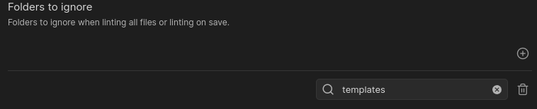

Ignoring or Disabling Rules
There are a couple of way to ignore rules in the Linter. These vary from settings in the plugin itself to values in the YAML frontmatter, and a syntax to ignore rules for part or all of a file.
Ignoring a Folder
There is a setting in the plugin for called Folders to Ignore. As the name suggests, this rule is meant
to allow users to specify folders that they do not want the linting rules to affect.
The values in the text box are expected to be folder paths from the base of the Obsidian vault.

For example, in the above image, the templates folder will be ignored when the Linter attempts to run its rules. Nested folders are also allowed as well.
Ignoring Files via Regex
There is a setting in this plugin which allows you to be able to ignore files by providing a regex to match against. If a file matches the provided regex, it will go ahead and ignore that file before it even lints the file.
For example, in the above image you can see that Excalidraw files which end in .exclidraw.md are being ignored
using the regex .*\.excalidraw\.md$.
File Specific Rule Disabling
There are times when there may be a need to disable a specific rule or rules for a particular file and there is no desire to ignore all files in the folder where that file resides. In that case, there is the ability to disable a rule or rules via the YAML frontmatter or ranged ignores.
YAML Frontmatter
In the YAML frontmatter of a file, there is the ability to specify a list of rules to disable for the file using the key disabled rules.
Valid values for rules to disable are the rule aliases to disable specific rules or all to disable all rules for the file.
For example, the following would disable capitalize headings and header increment for the entire file it is found in:
---
disabled rules: [capitalize-headings, header-increment]
---
The following disables all Linter rules for a file:
---
disabled rules: [all]
---
Range Ignore
When there is a need to disable the Linter for part of a file, ranged ignores can be used. The syntax for a ranged ignore
is <!-- linter-disable --> or %%linter-disable%% with an optional <!-- linter-enable --> or %%linter-disable%% where you want the Linter to start back up with its linting.
Leaving off the ending of a range ignore will assume you want to ignore the file contents from the start of the range ignore to the end of the file. So be careful when not ending a range ignore.
Warning
Ranged ignores only prevent the values in the ranged ignore from being linted. It does not prevent whitespace or other additions around the ranged ignore.
The following example shows how you would ignore just a part of a file:
Here is some text
<!-- linter-disable -->
This area will not be formatted
<!-- linter-enable -->
More content goes here...
%%linter-disable %%
This area will not be formatted
%%linter-enable%%
Here is another example that shows a ranged ignore without an ending indicator:
Here is some text
<!-- linter-disable -->
This area will not be formatted
This content is also not formatted either.
Info
Paste rules are not affected by ranged ignores as that would require the copied text to have a ranged ignore in it.